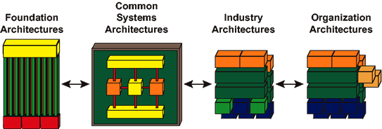
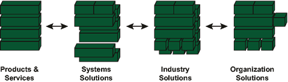
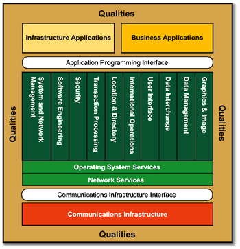

OUM |
The Open Group Architecture Framework (TOGAF) Overview |
||
Method Navigation |
Current Page Navigation |
||
|
|
||||||||
The Open Group Architecture Framework (TOGAF) is an industry standard architecture framework that can be used freely by any organization wishing to develop an Information Systems Architecture for use within that organization. This framework was developed by a consortium of industry experts who participate in The Open Group's Architecture Forum. The purpose of this overview, is to provide a brief introduction to TOGAF and describe how it relates to OUM. For more information on TOGAF, see The Open Group website.
There are four overall aspects of ‘Architecture’ that TOGAF described as being accepted subsets of an overall Enterprise Architecture:
The combination of Data Architecture and Applications Architecture is also referred to as the Information Systems Architecture.
TOGAF was originally designed to support the last of these - the Technology Architecture. Over its years of evolution, however, it has acquired many of the facets of a framework and method for enterprise architecture. As of TOGAF Version 8, these different facets have been integrated, and TOGAF has undergone a major redevelopment, with the result that it is now a fully-fledged enterprise architecture framework. The Open Group's vision for TOGAF is as a vehicle and repository for practical, experience-based information on how to go about the process of enterprise architecture, providing a generic method with which specific sets of deliverables, specific reference models, and other relevant architectural assets, can be integrated.
TOGAF is an Architectural Framework, that is, a set of methods and tools for developing a broad range of different IT Architectures. It enables IT users to design, evaluate, and build the right architecture for their organization, and reduces the costs of planning, designing, and implementing architectures based on open systems solutions.
The key to TOGAF remains a reliable, practical method - the TOGAF Architecture Development Method (ADM) - for defining business needs and developing an architecture that meets those needs, utilizing the elements of TOGAF and other architectural assets available to the organization.
Although a number of enterprise frameworks exist, there is no accepted industry standard method for developing enterprise architecture. The goal of The Open Group with TOGAF is to work towards making the TOGAF ADM just such an industry standard method, which is neutral towards tools and technologies, and can be used for developing the products associated with any recognized enterprise framework (for example, Zachman Framework) that the architect feels is appropriate for a particular architecture.
The TOGAF ADM does not prescribe any specific set of enterprise architecture deliverables. It is designed to be used with whatever set of deliverables the architect deems most appropriate. That may be the set of deliverables described in TOGAF itself or it may be the set associated with another framework, such as the Zachman Framework or Oracle’s own architectural artifacts such as the Industry Reference Architectures, ESF, etc. TOGAF does not prescribe a specific set of "architecture views" but instead provides an example taxonomy of the kinds of views that an architect might consider developing, and why; and it provides guidelines for making the choice, and for developing particular views, if chosen.
Given the increasingly widespread adoption of TOGAF within Oracle’s existing and prospective Customer Install Base, there is significant benefit in Oracle both building an awareness of TOGAF (that is, adding credibility to Customer EA engagements) and delivering Architecture related projects in the context of TOGAF as an Architecture delivery framework.
There are different perspectives as to the relevance of TOGAF to Oracle:
The TOGAF ADM is the result of continuous contributions from a large number of architecture practitioners. It describes a method for developing an enterprise architecture, and forms the core of TOGAF. It integrates elements of TOGAF described in this document as well as other available architectural assets, to meet the business and IT needs of an organization.
 Diagram")
TOGAF Architecture Development Method (ADM) Diagram
The Enterprise Continuum is an important aid to communication and understanding, both within individual enterprises, and between customer enterprises and vendor organizations. Without an understanding of "where in the continuum you are", people discussing architecture can often talk at cross purposes because they are referencing different points in the continuum at the same time, without realizing it. Any architecture is context-specific; for example, there are architectures that are specific to individual customers, industries, subsystems, products, and services. Architects, on both the buy side and supply side, must have at their disposal a consistent language to effectively communicate the differences between architectures. Such a language will enable engineering efficiency and the effective leveraging of Commercial Off-The-Shelf (COTS) product functionality. The Enterprise Continuum provides that consistent language.
There a two principle aspects of the Enterprise Continuum:

TOGAF Architecture Continuum

TOGAF Solutions Continuum
The TOGAF Foundation Architecture is an architecture of generic services and functions that provides a foundation on which more specific architectures and architectural components can be built. This Foundation Architecture has two main elements:


TOGAF Technical Reference Model and Standards Information Base
The TRM is universally applicable and can be used to build any system architecture.
The list of standards and specifications in the SIB is designed to facilitate choice by concentrating on open standards, so that architectures derived from the framework will have good characteristics of interoperability and software portability, but the TOGAF Architecture Development Method (ADM) specifically includes extending the list of specifications to allow for coexistence with or migration from other architectures.
Each of the phases appears in a circle on the TOGAF ADM Diagram. The objectives for each phase are described below.
To develop Target Architectures covering either or both (depending on project scope) of the Data and Application Systems domains. The scope of the business processes supported in Phase C is limited to those that are supported by IT, and the interfaces of those IT-related processes to non-IT-related processes.
To develop a Technology Architecture that will form the basis of the following implementation work
To sort the various implementation projects into priority order. Activities include assessing the dependencies, costs, and benefits of the various migration projects. The prioritized list of projects will go on to form the basis of the detailed Implementation Plan and Migration Plan.
To establish an architecture change management process for the new enterprise architecture baseline that is achieved with completion of Phase G. This process will typically provide for the continual monitoring of such things as new developments in technology and changes in the business environment, and for determining whether to formally initiate a new architecture evolution cycle.
The Open Group website will link you directly to the high-level TOGAF content. You do not need to be TOGAF certified to review and download the TOGAF content. Only TOGAF Case Studies are restricted to certified members of TOGAF.
The TOGAF ADM, version 9.1, has been mapped to the Envision focus area (and a few tasks from the Manage focus area) of Oracle Unified Method to help show which tasks would typically be executed within each phase of TOGAF, for example, task EA.140, Develop Applications Architecture, resides under TOGAF Phase A (Architecture and Vision).
See the mapping document and TOGAF view for applicable OUM tasks.

Copyright © 2006, 2016, Oracle and/or its affiliates. All rights reserved.